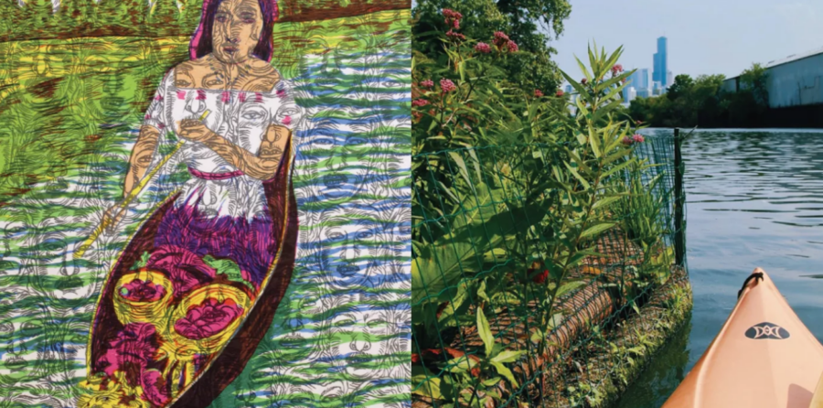

Floating Gardens of the Chicago River and México
Xochicago refers to the naming confluence of two waterway systems, one being the Chicago River and the other belonging to Xochimilco, an ancient settlement which is now a modern borough of Mexico City. Through historic, nostalgic, and contemporary images and interpretations of both locations, this exhibit draws parallels between chinampas built by the Mexica (Aztec) and the floating gardens being installed in Chicago by Urban Rivers. Important strides have been made to attract wildlife, plants, and people back to the river, yet this must be tempered to avoid over-commercialization through new development, which would plunge the Chicago River back into its polluted, industrial past.
Curated by Rebecca D. Meyers in collaboration with Urban Rivers